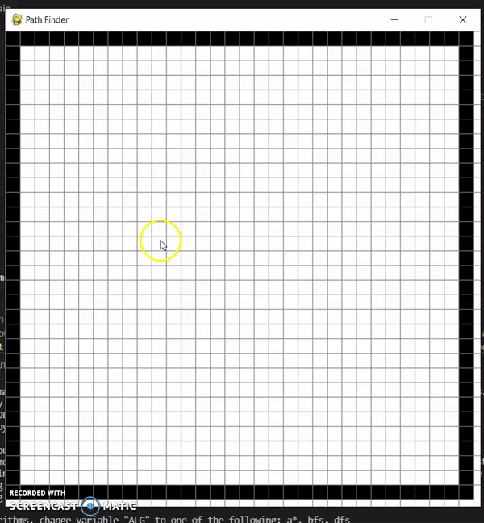
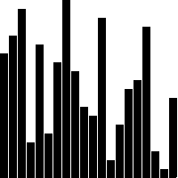

Projects
From published AI research to interactive visualizers — a few things I've built.
CodeDSI — Differentiable Code Search
Published research presenting an end-to-end unified architecture for neural code search. Achieved 95% zero-shot accuracy, outperforming CodeBERT, GPT, and T5 baselines.
Course Planner
Full-stack web application enabling students to manage and rate IT courses at Illinois State University. Features user auth, course ratings, and real-time updates.

Pathfinder Visualizer
Interactive visualization of A* and Dijkstra's pathfinding algorithms — real-time grid canvas with drag-to-place walls and animated search.

Sorting Visualizer
Animated visualization of sorting algorithms including Merge Sort, Quick Sort, Bubble Sort with adjustable speed and array size.
Space Battles
A fast-paced arcade space shooter game built with Pygame. Features enemies, scoring, and collision physics.
Tic-Tac-Toe AI
Unbeatable Tic-Tac-Toe AI built using the Minimax algorithm with alpha-beta pruning. The AI evaluates every possible game state to guarantee optimal play.
Sudoku AI Solver
Visual Sudoku solver using a constraint-satisfaction backtracking algorithm. Watch as it recursively fills the board in real time.